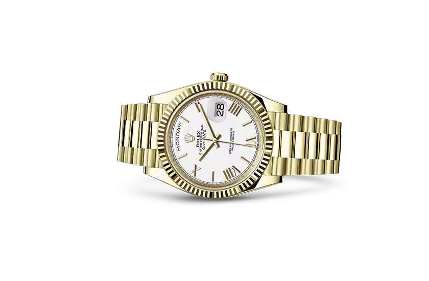
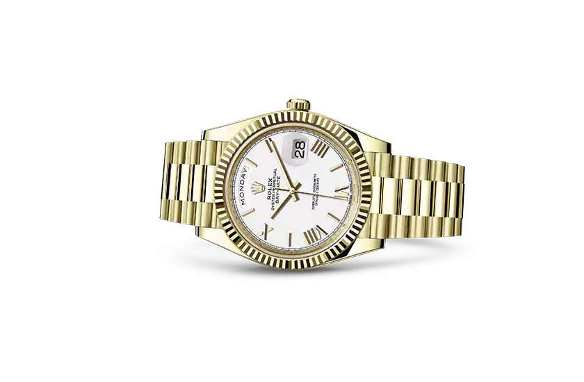

 BUY NOW
In 1956, the Rolex Day-Date made its debut. Available only in 18 ct gold or platinum
it was the first wristwatch to display the date and day of the week spelt out in full in a window on the dial.
With the President bracelet oniginally created specialy for it, the Day-Date continues to be the watch par excellence of infuential people.